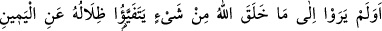
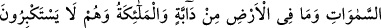
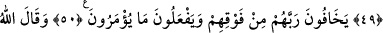
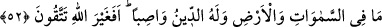
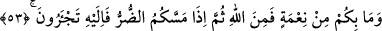
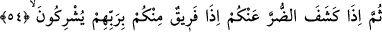
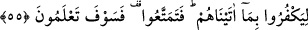

BİR SÜRE DAHA
FAYDALANIN
48. Allah’ın yarattığı herhangi bir şeyi görmediler mi? Onun gölgeleri, küçülerek
ve Allah’a secde ederek sağa sola döner.
49. Göklerde bulunanlar, yerdeki canlılar ve bütün melekler, büyüklük
taslamadan Allah’a secde ederler.
50. Onlar, üstlerindeki Rablerinden korkarlar ve kendilerine ne emrolunursa onu
yaparlar.
51. Allah buyurdu ki: İki ilah edinmeyin! O ancak bir ilahtır. O halde yalnız
benden korkun!
52. Göklerde ve yerde ne varsa, O’nundur, din de yalnız O’nundur. O halde
Allah’tan başkasından mı korkuyorsunuz?
53. Nîmet olarak size ulaşan ne varsa, Allah’tandır. Sonra size bir zarar
dokunduğu zaman da yalnız O’na yalvarırsınız.
54. Sonra da sizden o zararı giderdiğinde, içinizden bir zümre, hemen Rablerine
ortak koşarlar!
55. Kendilerine verdiklerimize karşılık nankörlük etmeleri için (öyle yaparlar). O
halde bir süre daha faydalanın; fakat yakında hakîkati bileceksiniz!
“Allah’ın yarattığı herhangi bir şeyi” yâni, bu gibi yaratılanları görüp dururlar da,
Allah’ın kudreti ve kahrı tamâmen kendilerine belli olması için düşünmezler ve
Allah’dan havf u haşyet duymazlar, demektir.
“Görmediler mi?” Âyetin başındaki hemze, inkâr (olumsuzluk) içindir ve aslında